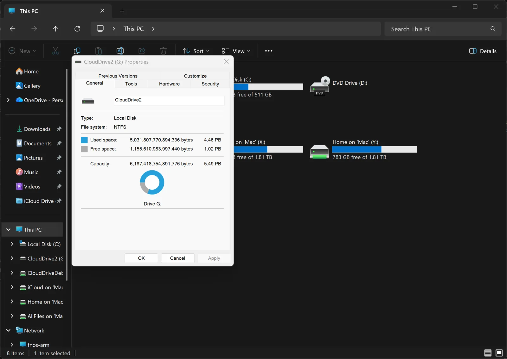
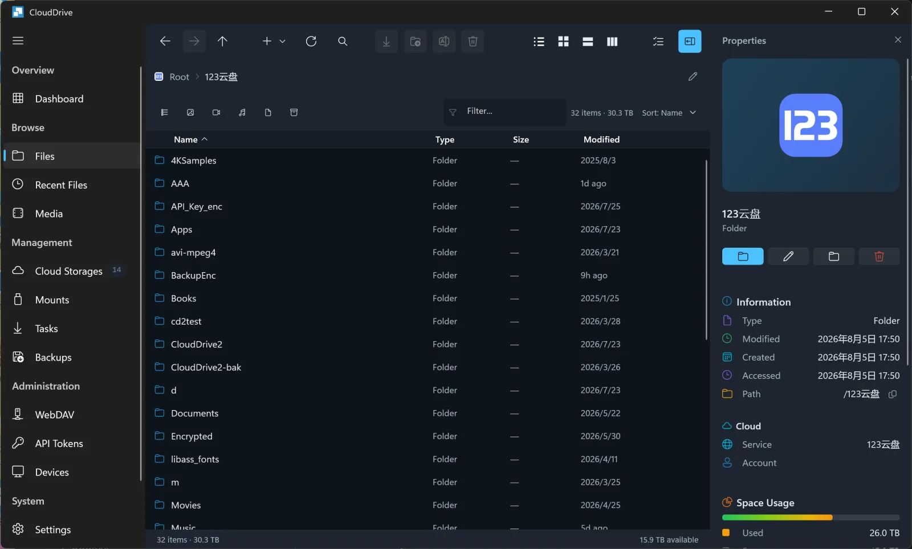

网盘挂载工具的真正集大成者：为什么 CloudDrive2 值得单独拎出来说
从多云盘统一管理、挂载成本地盘到加密文件夹，CloudDrive2 把网盘本地映射这件事做到了同类少见的完整度。本文从用户视角拆解它的差异化优势与取舍。
我用过多款网盘挂载工具——从早年的网盘直链播放器，到中间流行的各种映射方案，再到现在 CloudDrive2 这类把挂载、播放、备份、安全全部打通的完整产品。说实话这个品类里真正让我愿意长期付费的并不多，大多数要么只做了挂载这一件事就戛然而止，要么播放体验拉胯，要么多云盘管理乱成一锅粥。
CloudDrive2 是我用了快一年之后还在持续加订阅的那个，想了解全貌可以去它的官网看看。它不是这个赛道里最早的，也不是最便宜的，但它在「把网盘当成本地磁盘用」这件事上做到的完整度，目前同类里能追得上的屈指可数。
它的位置：一个成熟品类里的后来者逆袭
网盘挂载这个需求从 2018 年就有人做了。早期方案大多是单一网盘的映射，比如某度云的客户端偷偷提供了网络驱动器，或者 GitHub 上有人写的 OneDrive 映射脚本。后来出现了多云盘聚合工具，比如把多家网盘统一到一个界面里浏览的那些项目，再往后才有人把挂载这层做扎实。
这个品类的主流玩家大致分三档：第一档是大厂自己的官方客户端，功能覆盖自家网盘但绝对不管别家；第二档是开源社区的多云盘挂载工具，挂载做得还行但上层播放和安全基本空白；第三档就是 CloudDrive2 这种从第一天就把挂载、播放、备份、加密做进同一套架构的完整产品。
你猜得到哪一档用户体验最割裂——也猜得到哪一档最省心。
差异化一：挂载不是终点，是整条链路的起点
很多同类工具的挂载逻辑是：云盘 → FUSE 接口 → 本地盘符。完成这条链路就算完事了，后面你拿这块盘去干什么，是 Emby 媒体库也好、是本地文件管理也好，工具本身不再关心。
CloudDrive2 的思路完全不一样。对它来说挂载只是把云盘拉进本地生态的第一步，后续整条使用链路它都在主动介入。举几个样本里提到的细节：
只读挂载是它提供的一个开箱即用选项。网盘删除没有回收站这件事老用户都懂——在挂载盘里删的文件云端是真没了。CloudDrive2 在挂载点设置里直接给了只读开关，勾上之后媒体库的刮削工具再怎么操作也写不进去，物理上杜绝误删。这不是什么高深技术，但同类工具里能记得把这件事做进 UI 的真不多。
开机自动挂载也不是什么新功能，但 CloudDrive2 把依赖顺序这件事考虑进去了。Emby 这类服务如果先起来、挂载盘还没到位，媒体库就是一片空白。它的自动挂载跟着核心服务一起启动，容器场景还可以显式声明依赖。这种细节是只有真的把工具用进生产环境才会想到的。

差异化二：加密文件夹——把隐私这件事做进了产品骨架
我见过太多人往网盘算传证件扫描件、财务单据、私人笔记这类东西，嘴上说"没事反正加密了"，其实根本没加密。网盘服务商的隐私边界始终是个灰色地带，真出事了普通用户根本扛不住。
CloudDrive2 的加密文件夹设计在同类里是少见的完整方案。它不是简单的压缩包加密，而是在读写路径上自动完成解密——密码解锁之后，加密文件夹在挂载盘里和普通文件夹没有任何区别，你可以在网页里直接浏览、在挂载盘里直接读写、备份任务照常把它当源或目标。云端看到的始终是密文，连文件名都是 AES 加密后的乱码。
更关键的是它的密码机制：密码只留在你本机，不上传、不恢复、不存在任何服务器上。这是零知识设计的代价——密码丢了数据就没了，没有找回通道。但也正因为如此，你不需要相信任何第三方能帮你保管密码。终身会员还不受单文件上传大小限制，月费年费会员有 200MB 的限制，档位差异在clouddrive2文档里也写得清清楚楚。
差异化三：云端账号体系让多设备体验真正统一
这个点其实是我最惊喜的发现——CloudDrive2 的账号是云端的，不是绑定某台机器的本地配置。你在 A 机器上登录过的网盘账户，在 B 机器登录同一账号就能直接用，不用重新授权每一家网盘。手机应用、电视应用用的也是这同一个账号。
这件事听起来简单，做起来其实不容易。同类工具大多要么完全本地配置（换台机器从头再来），要么半云半本地（某些凭据能同步、某些不能）。CloudDrive2 选择的方案是：云端同步的网盘账户信息用用户自己的密码高强度加密后才上传，服务器只存密码哈希、没有解密密钥。也就是说服务器上存着的只是一串你加密过的密文，真被盗了别人也打不开。

它的取舍：为完整度付出的代价
说它好不能说它没代价。我用了快一年，遇到的几个痛点是实打实存在的：
平台差异是最大的硬伤。挂载功能依赖操作系统放行，Windows 核心服务走 WinFSP 没问题，macOS 官方下载版也能跑但需要装 macFUSE，Linux 和 NAS 走 FUSE 也行。但 Mac App Store 版因为完整沙盒直接不能挂载，iPhone/iPad/Apple TV 这类系统级限制的设备也只能走 File Provider 间接接入。如果你主要用 iOS 生态，CloudDrive2 的挂载功能基本用不上——这是系统限制，不是产品的锅，但确实是选择门槛。
学习曲线比单功能工具陡。安装包从官方下载拿，第一次打开管理页的注册流程、添加网盘的授权方式因网盘而异（扫码型、跳转型、填表型三种）、挂载点的只读/自启/缓存设置，再加上加密文件夹的密码管理纪律——这些功能堆在一起对新手不友好。样本文档里写得很细，但老用户上手也要花点时间摸清楚自己需要哪些。
免费版的额度很克制。免费账号同时最多连 2 个网盘、挂载点限 1 个，这在早期体验阶段够用，但真用起来很容易就碰上限了。会员档位按月费、年费、终身三档，价格不算便宜但也不离谱。终身会员不受加密文件单文件大小限制这点是实打实的优势。
选购结论：它适合谁，不适合谁
如果你同时挂着多家网盘、想把它们统一映射成本地盘、还希望挂载之后整条使用链路（媒体库、备份、加密）都有产品级的支持——CloudDrive2 是目前这个品类里最值得掏钱的。我自己用了一年没换回别的，就是因为把 Emby 媒体库直接指到它的挂载盘、加上只读防误删和开机自启这三件事，让我的本地家庭影院整个稳定了好几个月。
如果你只是想把某一家网盘挂成本地盘，或者你只在 iOS 设备上用网盘——CloudDrive2 的核心价值你用不上。单网盘用官方客户端就行，iOS 生态里挂载功能本身就受系统限制，花这个钱不值。
最后给一句明确的推荐：多云盘重度用户、Emby/Jellyfin 家庭影院用户、有隐私需求想加密敏感文件再上云的，直接上手终身会员不会后悔。它不是这个赛道里功能最多的，但是做得最完整、最考虑长期使用体验的那个。
CloudDrive2 的资料和文档在三个仓库都能拿到，GitHub 的 APK 仓库 是主库，Gitee 和 GitCode 上也有同步镜像（Gitee / GitCode），国内网络访问后者会更顺畅。